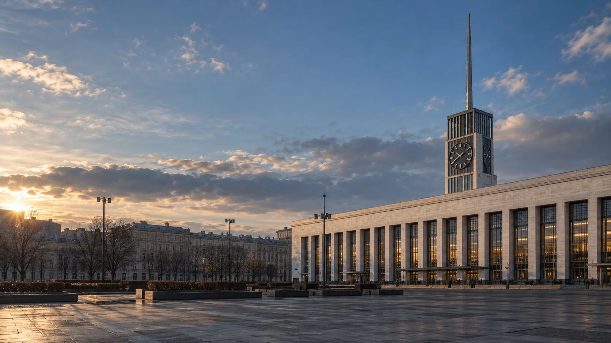

Дом молодёжи
Атлант
ул. Руставели, д. 37
Смотреть площадку
Бесплатные возможности для молодёжи 14–35 лет
19 клубов и молодёжных пространств, центр #Водинголос и Дом молодёжи «Атлант». Найди площадку по интересу.
Смотреть площадкиСостав и контакты собраны по открытым материалам. Набор, расписание и условия занятий уточняй у организатора.
Каталог района
Ищи по названию, адресу или занятию. Можно выбрать тему.
Показана 21 площадка
Открой карточку: там есть направления, адрес, телефон и источники.
ул. Руставели, д. 37
Смотреть площадкуСуздальский пр., д. 61
Смотреть площадкуул. Лужская, д. 10, к. 1, лит. Б
Смотреть площадкупр. Науки, д. 44, лит. А
Смотреть клубул. Бутлерова, д. 10, к. 1, лит. Б
Смотреть клубКондратьевский пр., д. 63, к. 1
Смотреть клубПискарёвский пр., д. 52, лит. А
Смотреть клубСветлановский пр., д. 121, к. 1, лит. А
Смотреть клубпр. Мечникова, д. 19, лит. А
Смотреть клубпр. Непокорённых, д. 16, к. 1, лит. Д
Смотреть клубпр. Просвещения, д. 67, лит. А
Смотреть клубпр. Непокорённых, д. 74, лит. А
Смотреть площадкуул. Академика Байкова, д. 15, лит. А
Смотреть клубул. Ушинского, д. 35, к. 1, лит. А
Смотреть клубпр. Культуры, д. 21, к. 1, лит. А
Смотреть клубпр. Науки, д. 38, лит. А
Смотреть площадкупр. Луначарского, д. 80, лит. Б
Смотреть клубпр. Маршала Блюхера, д. 14
Смотреть клубул. Руставели, д. 66, лит. А
Смотреть клубПискарёвский пр., д. 28, лит. А
Смотреть клубул. Ушинского, д. 5, к. 1, лит. А
Смотреть клубПодходящих площадок не найдено. Попробуй другой запрос.
Контакты ПМЦ
Общий контакт центра и телефоны отдельных площадок в карточках.
Учреждение района
ул. Руставели, д. 37
Перед первым занятием
ПМЦ сообщает о бесплатных занятиях для молодёжи 14-35 лет. Условия отдельной группы могут различаться.
Узнай возраст участников группы.
Проверь дни, время и наличие мест.
Узнай, как присоединиться.
Спроси, нужна ли справка для спорта и танцев.
Состав площадок, адреса и телефоны взяты со страницы администрации Калининского района. Примеры бесплатных направлений: с сайта ПМЦ «Калининский». Платные детские студии в каталог не включены.
Действующее расписание, набор и условия участия могут отличаться. Телефоны некоторых площадок в источниках расходятся: проверь контакт перед визитом.